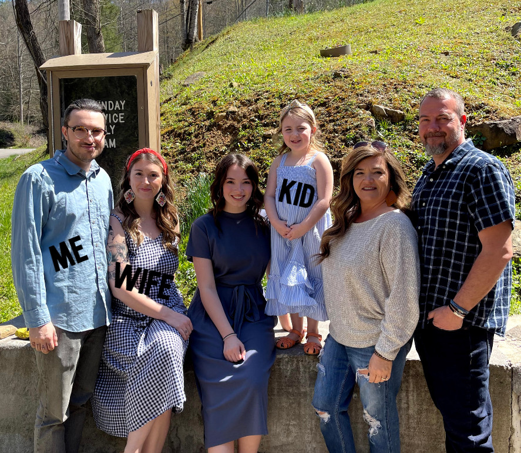

ABOUT

Hello, I'm Dakota Hall.
I'm a Front End Software Engineer who specializes in creating responsive UI's
for
your website needs.
Creative UI is an area I take great pride it.
Let me build what you need...
MY ENGINEERING STORY SO FAR
Like many other developers, my journey did not begin in programming. My first love in life was math and physics. The initial plan was to become a research professor. Those plans changed, however, when I began my family. It was then that I decided to turn my hobby of coding into a future career. After graduating with a math degree, I decided to take the graduate school route. I know this isn't the most common thing in software engineering, but I wanted to shore up some weaknesses that I believed that I had from being self-taught. I needed to develop my project management skills and I wanted to become better aquainted with different languages. My master's degree program allowed me to do so. Since graduating I have worked hard to continue being a life-long learner - something that I believe is a invaluable skill for Software Engineers.
PORTFOLIO
For now, there isn't much to my portfolio. Don't worry though, I am working on adding new projects
everyday. Check back soon for updates!
Here is a link to my GitHub page as well. It will contain
some of the projects that I
completed in my graduate program that includes desktop and mobile applications.
GET IN TOUCH
Below is my email. Feel free to email me with any questions or let me know if you would like to work
together.
dhall01820182@gmail.com
(606)634-7321